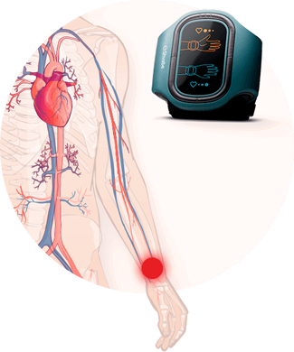

Каждый год от сердечно-сосудистых заболеваний умирает 17,5 млн человек, а к 2030 году эта цифра увеличится еще почти на 10 млн. Но 90% инфарктов и инсультов можно предотвратить. Как не оказаться в зоне риска и вылечить гипертонию, рассказывает Лоуренс Дж. Аппель – главный кардиолог American Heart Association.
– Здравствуйте, мистер Лоуренс. Первый вопрос по статистике - насколько верны данные? И правда ли, что сейчас гипертония помолодела?
– Здравствуйте, да, к большому сожалению это утверждение верно. За последние полгода у нас было двенадцать молодых людей с настоящим инфарктом миокарда – самому младшему 16 лет, а старшему 24. Представить себе такое 10 лет назад было просто невозможно. Что уж говорить о людях старше 40 лет.
Нормальное ли у вас давление?
120/80 – норма в 20-40 лет
135/90 – норма в 40-60 лет
140/90 – гипертония в легкой степени
150/100 – тяжелая гипертония
– Как оказаться вне зоны риска или понять, что начались проблемы с давлением?
– К сожалению, от скачков давления никто не застрахован. Практически всегда я слышу примерно одну и ту же историю: “Сегодня какой-то ужасный день. Все валится из рук, болит голова, ничего не хочется делать, только лежать и отдыхать. Приезжаю с работы очень уставший, а уснуть не могу долго. Еще по 5 раз за ночь просыпаюсь. Наверное какие-то атмосферные бури…” – но это не бури, а самая настоящая гипертония.
– То есть вы хотите сказать, что первые симптомы болезни люди просто не замечают?
– Совершенно верно! 87% людей просто не знают нормальных показателей давления и не начинают заниматься здоровьем, пока не дойдут до критической точки. Хотя стоило бы. Осложнения при повышенном АД – ишемическая болезнь сердца и инсульты – превосходят тот же СПИД или рак. Только с начала нашего интервью в мире от гипертонии умерли 263 человека.

– Какова примерная статистика людей с повышенным давлением?
– Гипертонией страдают 80% взрослого населения, из них 60% – люди от 40 лет.
– Из-за чего возникает гипертония?
– Основные причины гипертонии: неправильное питание, отсутствие физических нагрузок, повышенный уровень глюкозы и содержание жиров в крови. Прибавьте к этому хроническое переутомление, стресс, курение и прочие атрибуты современной жизни. Ужасающий коктейль получается.
– Мистер Лоуренс, но ведь гипертонию можно вылечить?
– Да, теперь хорошая новость: гипертонию можно не только вылечить, но и предотвратить! Именно поэтому мы с вами сегодня и собрались. Я хочу рассказать вам о корректоре давления АВР-051, который недавно был представлен на конференции посвященной гипертоническому кризу и уже помог вылечиться от артериальной гипертензии более 1 000 000 людей.

– Постойте, то есть речь пойдет не о таблетках?
– Как бы далеко не продвинулась фармакология, все известные лекарства от гипертонии только временно понижают давление и не борются с причиной ее возникновения. Наукой доказано, что токовая терапия на данный момент самая эффективная терапия в традиционной медицине. Воздействие на АД через импульсы не только нормализует показания, но и очищает закупоренные холестерином сосуды.
– Расскажите подробнее об устройстве и работе АВР-051.
– Корректор давления представляет из себя браслет, который передает через кожу электромагнитные импульсы определенной частоты. Импульсы тока разной величины воздействуют на корешки спинномозговых нервов и тем самым тонизируют сосуды для лучшего кровообращения.

От токового воздействия возбуждаются нервные волокна, что приводит к улучшению микроциркуляции крови, очищению и укреплению стенок сосудов.
– Это потрясающе! А сложно ли им пользоваться? И как долго ждать эффект?
– Что вы, очень просто! Надеваете АВР-051 на запястье левой руки и запускаете программу. И все. Корректор постепенно начинает снижать артериальное давление посредством электростимуляции на биоактивные зоны. Для достижения эффекта необходимо проводить процедуры электростимуляции АВР-051 ежедневно в течение 14 дней.
– То есть через 14 дней человек полностью избавиться от гипертонии?
– Корректор давления представляет из себя браслет, который передает через кожу электромагнитные импульсы определенной частоты. Импульсы тока разной величины воздействуют на корешки спинномозговых нервов и тем самым тонизируют сосуды для лучшего кровообращения.
– Расскажите подробнее об устройстве и работе АВР-051.
– Все зависит от степени болезни. Но спустя 14 дней, даже самые тяжелые больные почувствую улучшение общего самочувствия. То есть давление начнет снижаться, а вместе с ним пройдут головные боли, головокружения, метеочувствительность, бессонница.
– Люди не страдающие повышенным давлением могут им пользоваться?
– К сожалению, от гипертонии никто не застрахован, даже молодые люди. И с возрастом у каждого человека закупориваются сосуды. Потому АВР-051 можно пользоваться без назначения врача. Он повышает работоспособность за счет нормализации давления и не только борется, но и служит профилактическим средством при таких болезнях, как:
- артериальная гипертензия I-II-III степени;
- нейроциркуляторная дистония;
- ишемическая болезнь сердца;
- стенокардия;
- заболевания и травматические повреждения сосудов;
- хроническая сердечная недостаточность;
- ангиоспазмы;
- болезнь Рейно.

– Спасибо вам большое за интервью. У меня остался последний вопрос: где можно приобрести корректор давления?
– АВМ-051 есть в свободной продаже, но если вы хотите сэкономить, то советую приобретать его на сайте производителя. Там вам подробно ответят на все интересующие вас вопросы по поводу работы корректора давления и возможно, сделают скидку.